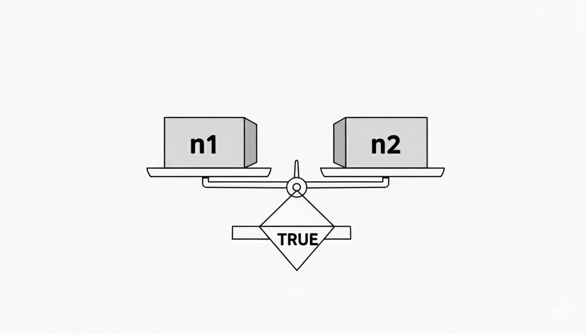

So far every word you've written runs the same way every time. But useful programs need to choose: print PASS if the score is high enough, print FAIL if it isn't. That choice depends on a value on the stack, and it changes the path of execution.
Forth gives you a single, clean mechanism for this: IF … THEN. Before you can use it, you need a way to produce the yes/no value it acts on.

These words each consume two numbers and push a single result called a flag:
A few quick examples at the top level — no definition needed:
Forth uses numbers as flags: 0 means false,
−1 ($FFFF) means true. There is nothing
special about these values — they're just 16-bit integers.
Any non-zero value is treated as true by IF,
but the comparison words always produce exactly 0 or −1.
−1 in 16-bit two's complement is $FFFF — all bits set.
This is a useful property: AND with −1 leaves
a value unchanged; AND with 0 clears it.
Forth exploits this in bitmasking idioms.
The simplest decision structure runs a block of words only when the flag is true (non-zero):
flag IF true-words THEN
Pops the flag. If non-zero, runs true-words then continues after THEN. If zero, skips to THEN immediately.
A word that prints a message only when the score is under 50:
: WARN 50 < IF CHAR L EMIT CHAR O EMIT CHAR W EMIT THEN ;
80 WARN — 80 < 50 is false (0), so IF skips
to THEN; nothing prints.
42 WARN — 42 < 50 is true (−1), so IF runs
the body; LOW prints.
Let's trace through a call to GRADE with 42,
where GRADE contains 50 < IF .FAIL THEN:
| Step | Data stack |
|---|---|
| 42 (argument) | ( 42 ) |
| 50 (literal) | ( 50 42 ) |
| < → 42<50 true | ( -1 ) |
| IF → flag non-zero | ( ) |
| .FAIL → prints FAIL | ( ) |
| THEN → continues | ( ) |
Now with 80: < produces 0 (false), so
IF skips over .FAIL and jumps
directly to THEN. Nothing prints.
When you want one thing to happen for true and
a different thing for false, add an ELSE:
flag IF true-words ELSE false-words THEN
Pops the flag. If non-zero, runs true-words and skips false-words. If zero, skips to false-words. Either way, continues after THEN.
: GRADE ( score -- ) 50 < IF .FAIL ELSE .PASS THEN ;
Exactly one of the two branches runs; control always reaches THEN afterward.
0= flips the flag in-place: it pushes −1 if
the top of stack is zero, or 0 if it's anything else.
Push −1 if n is zero, else push 0. Useful for testing equality-to-zero without a literal.
0 0= \ -1 (true — zero is zero) 5 0= \ 0 (false — 5 is not zero)
0= also turns any non-zero truth value into
a canonical 0, and a 0 into −1 — so it's a logical NOT
for Forth flags.
IFs can be nested. The inner THEN closes the inner IF; the outer THEN closes the outer IF. Keep nesting shallow to stay readable — if you find yourself three levels deep, consider breaking things into named words.
\ Chapter 7 example — Decisions : .PASS CHAR P EMIT CHAR A EMIT CHAR S EMIT CHAR S EMIT ; : .FAIL CHAR F EMIT CHAR A EMIT CHAR I EMIT CHAR L EMIT ; : GRADE ( score -- ) 50 < IF .FAIL ELSE .PASS THEN ; : MAIN 80 GRADE CR 42 GRADE CR 50 GRADE CR ; MAIN HALT
80 < 50 is false → PASS.
42 < 50 is true → FAIL.
50 < 50 is false → PASS.
65 GRADE print now?
POSITIVE? — prints Y
if n > 0, N otherwise. What does
0 POSITIVE? print?
L for values < 5 and H
for the rest. What does the output look like?
IF?
n limit < IF … THEN for threshold test
IF … ELSE … THEN for two paths
0= as logical NOT
Nested IFs for multi-way decisions
True = −1 ($FFFF); False = 0
Any non-zero value is true to IF
Comparisons consume two values, push one flag
THEN marks where both branches rejoin